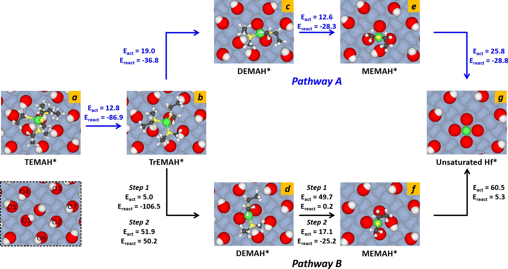
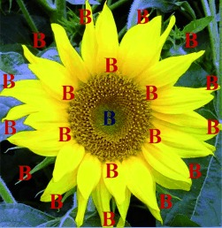

1. Growth mechanism of HfO2 film on H-terminated Si (100) surface from atomic layer deposition process using tetrakis(ethylmethylamino)hafnium. Surfaces and Interfaces. DOI: 10.1016/j.surfin.2024.105024
2. Chemisorption and Surface Reaction of Hafnium Precursors on the Hydroxylated Si(100) Surface. Coatings. DOI: 10.3390/coatings13122094
3. Investigation of tetrakis(ethylmethylamido)hafnium adsorption mechanism in initial growth of atomic layer deposited-HfO2 thin films on H-/OH-terminated Si (100) surfaces. Journal of Vacuum Science & Technology B. DOI: 10.1116/6.0002920
4. A theoretical study of the atomic layer deposition of HfO2 on Si(1 0 0) surfaces using tetrakis(ethylmethylamino) hafnium and water. Applied Surface Science. DOI: 10.1016/j.apsusc.2022.155702
5. Atomic Layer Deposition of Al2O3 Using Aluminum Triisopropoxide (ATIP): A Combined Experimental and Theoretical Study. The Journal of Physical Chemistry C. DOI: 10.1021/acs.jpcc.8b09198

1. Disk Aromaticity of the Planar and Fluxional Anionic Boron Clusters B20−/2−. Chemistry - A European Journal. DOI: 10.1002/chem.201104064
2. Boron-Boron Multiple Bond in [B(NHC)]2: Towards Stable and Aromatic [B(NHC)]n Rings. Angewandte Chemie International Edition. DOI: 10.1002/anie.201300126
3. Design of aromatic heteropolycyclics containing borole frameworks. Chemical Communications. DOI: 10.1039/c3cc47573e
4. Particle on a Boron Disk: Ring Currents and Disk Aromaticity in B202–. Inorganic Chemistry. DOI: 10.1021/ic401596s
